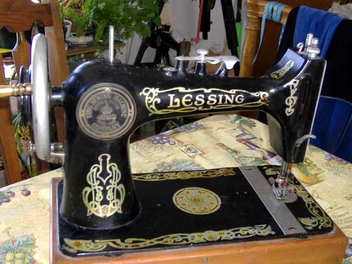
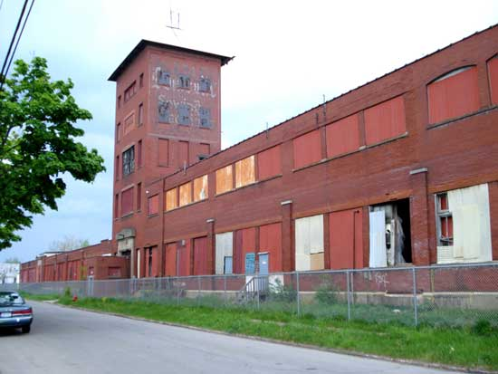

King Sewing Machine
Company
By Chrys Gunther
Photographs of the King factory courtesy of
Kevin 2007
Here is some information about the King Sewing Machine Co. If you have any
further information to add please write to the NeedleBar Forum, the topic is
HERE
There are also more pictures in the NeedleBar Picture Library under US > King HERE and references in the list of American Sewing Machine Makers HERE
Walter Grant King (1871-1955) started the King Sewing Machine Co. in 1907 in Buffalo, NY. The company was incorporated in March of 1909 with a capital stock of $250,000. In 1910 it was increased to $500,000.
King had graduated in 1894 from Cornell University with a MSc in chemical engineering. He went to work as an engineer at Iroquois Iron Works in Buffalo, NY and worked his way up to manager before leaving in 1907 to start the King Sewing Machine Co.
King was President and General Manager. George B. Montgomery was Treasurer and Morris S. Tremaine was Vice-President.
In November 1910 a new factory was built so they could increase production to satisfy customer demand. They claimed they would be able to make 100,000 sewing machines a year at the new factory. The new factory covered more than 100,000 square feet and occupied eight acres of property. Production at that time increased from 30,000 to 100,000 machines per annum. All the machinery was electric and built by the King Company for the manufacture of King sewing machines.
In 1910 they were also known as the King Manufacturing Co. They sold their sewing machines directly to the public. By eliminating dealers and middlemen they were able to offer low prices. They sold machines with no money down and easy payment plans. Customers were also given a free trial and 20 year guarantee.
#138055, courtesy of Danielle. This is a Vibrating Shuttle machine with automatic tension release and a screw stitch length regulator. The serial number is under the front slide plate on the bed of the machine. The corners of the bed have K for King incorporated in the decals and a regal-style coat of arms in the center of the bed. The faceplate also has a prominent K.

#429785, courtesy of Martha Wickman. This vibrating shuttle machine made by King is badged as Lessing. It has a top leaf tension. The rear inspection plate reads King Sewing Machine Company, Buffalo NY USA. This was 1709 Rano Street, Buffalo, NY, also Main Street, Buffalo, NY.
In 1915 the company was acquired by Sears Roebuck & Co. In addition to sewing machines they also made the King Cream Separator (which is in the Sears catalogs from that time period.)
Extracts from this consolidated annual statement for Sears, Roebuck & Co. show that the King Sewing Machine Company was owned by Sears. In addition, Sears owned Superior Cabinet Company, who manufactured sewing machine cabinets.
Walter Grant King is listed as President of the King Manufacturing Co. until 1926 in the chemical community database. This is consistent with information posted by the White Sewing Machine Co. They state that by 1926 White acquired the King Sewing Machine Co. (in addition to Theodore Kundtz Furniture Factory and the Domestic Sewing Machine Co.)
Photographs of the King Factory - Present day

Chrys Gunther ©2007, 2008